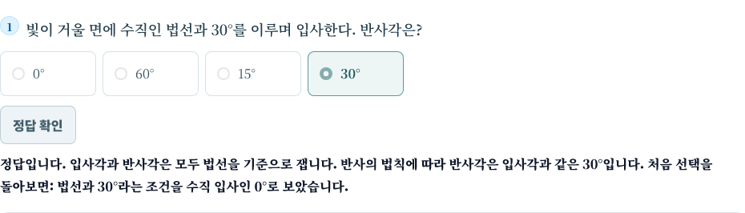
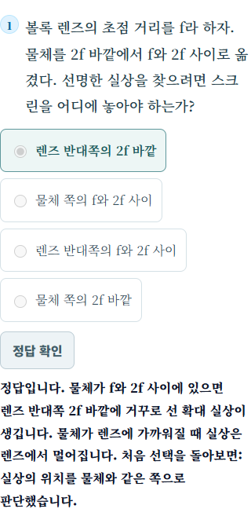

재도전 피드백 수정 확인
정답을 맞히면 정답 해설을 보여줍니다. 첫 응답을 오답으로 보관한다는 문장은 학생 화면에서 제거했습니다. 진단 기록과 과학 개념을 바로잡는 설명은 유지했습니다.
공통 객관식과 개별 실험 8곳에 적용했습니다. 두 브라우저 각각 201개 경로의 수정·새로고침 흐름, 변경 화면 790개 상태의 가독성을 확인했습니다. 회귀 검사 34개 통과. 실제 기기를 연결한 검사는 아닙니다.

WebKit · 1024px
Chrome · 390px검사 데이터 · 앞선 전체 시각 검증